Ampilfy Shader Editor内建节点详细文档
请尊重原作者的工作，转载时请务必注明转载自：www.xionggf.com
目录
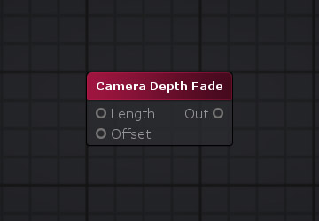
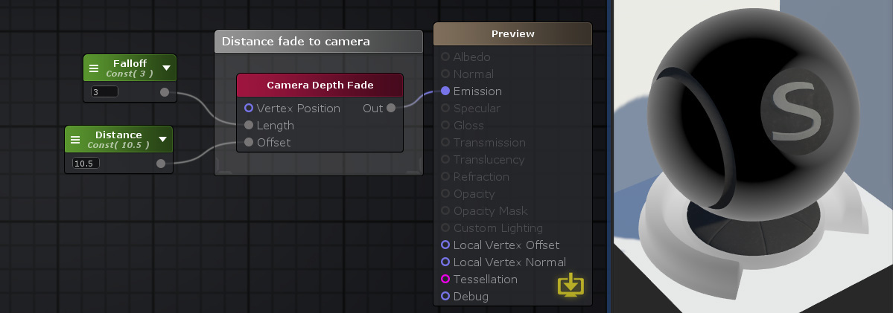
上图的输出代码端为：
VS中：
float3 objectToViewPos = TransformWorldToView(TransformObjectToWorld(v.vertex.xyz));
float eyeDepth = -objectToViewPos.z;
o.ase_texcoord3.x = eyeDepth;
算出顶点变换到观察空间之后的z值的相反数，然后传递到片元着色器中去
FS中：
//
投影矩阵相关的参数，_ProjectionParams
x 为 1 或者-1，y 为近截平面值，z 为远截平面值，w 为远截平面值的倒数。
float eyeDepth = IN.ase_texcoord3.x;
// _Distance为10.5
_FallOff为3.0，如果不传递 _Distance 和_FallOff的具体值，则默认地_Distance为0，_FallOff为1
float cameraDepthFade3 = (( eyeDepth -_ProjectionParams.y - _Distance ) / _FallOff);
float3 temp_cast_0 = (cameraDepthFade3).xxx;
节点参数描述如下表：
|
节点参数 |
描述 |
默认值 |
|
Vertex Position |
不要使用这个内部数据，因为它在内部被忽略。仅当相应的输入端口未连接时可见。 |
0 |
|
Length |
定义在 0 和 1 值之间应该发生淡入淡出的视图坐标中的距离。仅当相应的输入端口未连接时可见。 |
0 |
|
Offset |
定义从 0 到 1 的淡入淡出应该开始的平面附近相机的视图坐标偏移。仅当相应的输入端口未连接时可见。 |
0 |
输入端口（input port）参数描述如下表：
|
输入端口 |
描述 |
类型 |
|
Vertex Position |
允许自定义顶点位置的规范。如果未连接，则使用当前顶点位置。 |
float3 |
|
Length |
定义在 0 和 1 值之间应该发生淡入淡出的视图坐标中的距离 |
float |
|
Offset |
定义从 0 到 1 的淡入淡出应该开始的平面附近相机的视图坐标偏移。 |
float3 |
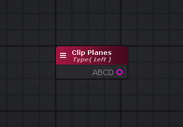
本节点输出视截体的六个平面。这些平面使用点法式方程描述，即一个平面用一个float4类型的变量存储。
它的Left、Right、Bottom 、Top、 Near、 Far六个分量，分别对应于对应于内置着色器变量unity_CameraWorldClipPlanes的0到5的6个分量值
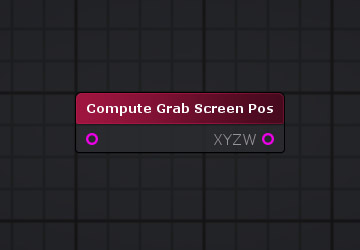
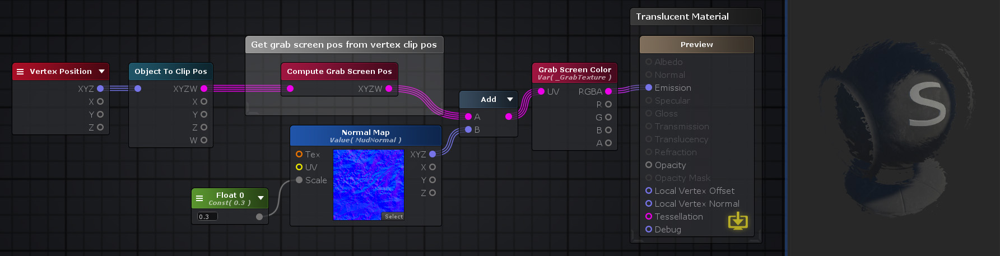
本节点就是对应于ComputeGrabScreenPos函数库函数
//
所在文件：UnityCG.cginc
代码
// 所在目录：CGIncludes
// 从原文件第 793 行开始，至第 806 行结束
// 参数 pos 是一个基于裁剪空间的齐次坐标值
inline float4 ComputeGrabScreenPos(float4 pos)
{
#if UNITY_UV_STARTS_AT_TOP
float scale = -1.0;
#else
float scale = 1.0;
#endif
float4 o = pos * 0.5f; // step
1
o.xy = float2(o.x, o.y*scale) + o.w;// step 2
#ifdef UNITY_SINGLE_PASS_STEREO
o.xy = TransformStereoScreenSpaceTex(o.xy, pos.w);
#endif
o.zw = pos.zw;
return o;
}
当把当前屏幕内容截屏并保存在一个目标纹理的时候，有时会有“要知道在裁剪空间中的某一点，将会对应保存在目标纹理中哪一点”的需求。ComputeGrabScreenPos函数即是实现这个功能的函数。该函数传递在裁剪空间中某点的齐次坐标值进来，返回该点在目标纹理中的纹理贴图坐标
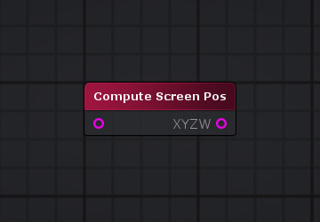
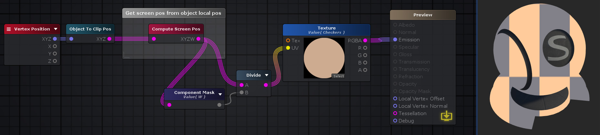
Compute Screen Pos 节点将裁剪空间中的位置，转换为基于屏幕空间的坐标。然后，这些坐标可以用来作为纹理的UV坐标，以供纹理采样，进行基于屏幕空间的纹理映射。
节点参数描述如下表所示：
|
节点参数 |
描述 |
默认值 |
|
Input |
顶点在裁剪空间中的位置坐标。 |
(0,0,0,0) |
|
Normalize |
是否自动执行透视除法 |
False |
输入端口参数描述如下表
|
输入端口 |
描述 |
|
类型 |
Input |
|
顶点在裁剪空间中的位置坐标。 |
float4 |
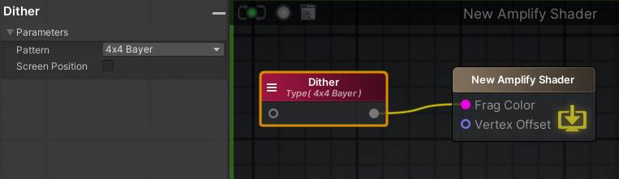
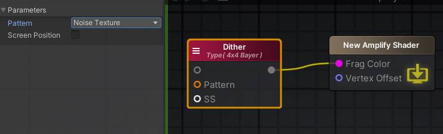
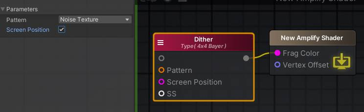
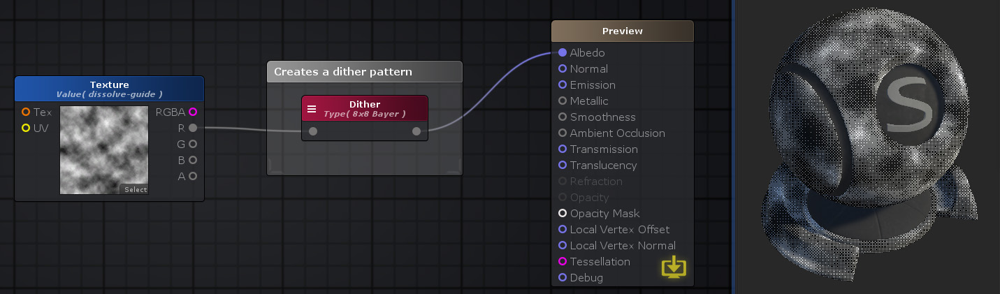
Dither节点根据其Pattern属性，创建一个基于屏幕空间抖动模式。如果没有数据输入给它的Input端口。它将直接输出此模式值。如果有数据输入，则抖动模式将通过步进操作(Step)应用于输入值之上。
节点参数描述如下表所示：
|
节点参数 |
描述 |
默认值 |
|
Input |
4x4 Bayer:使用一个4x4的矩阵创建16个都是唯一的抖动层（dither layer） |
(0,0,0,0) |
|
8x8 Bayer:使用一个8x8的矩阵创建64个都是唯一的抖动层（dither layer） |
||
|
使用预计算的噪声纹理作为抖动层 |
||
|
Screen Position |
是否自动执行透视除法 |
False |
输入端口参数描述如下表
|
输入端口 |
描述 |
类型 |
|
Pattern |
当节点使用“预计算的噪声纹理作为抖动层”时本项可见 |
Sampler2D |
|
Screen Position |
指定自定义屏幕位置以确定抖动模式。如果未明确指定此值，则使用当前片元的屏幕位置。 |
Float4 |
|
Input |
输入的抖动模式将通过此值进行“步进操作”计算 |
Float |
当选择4x4 Bayer模式时，抖动处理的代码如下：
inline float Dither4x4Bayer( int x, int y )
{
const float dither[ 16 ] = {
1, 9, 3, 11,
13, 5, 15, 7,
4, 12, 2, 10,
16, 8, 14, 6 };
int r = y * 4 + x;
return
dither[r] / 16; // same # of
instructions as pre-dividing due to compiler magic
}
fixed4 frag (v2f i ) : SV_Target
{
UNITY_SETUP_INSTANCE_ID(i);
UNITY_SETUP_STEREO_EYE_INDEX_POST_VERTEX(i);
fixed4 finalColor;
#ifdef ASE_NEEDS_FRAG_WORLD_POSITION
float3 WorldPosition = i.worldPos;
#endif
float4 screenPos = i.ase_texcoord1;
float4 ase_screenPosNorm = screenPos / screenPos.w;
ase_screenPosNorm.z = ( UNITY_NEAR_CLIP_VALUE >= 0 ) ? ase_screenPosNorm.z : ase_screenPosNorm.z * 0.5 + 0.5;
float2 clipScreen1 = ase_screenPosNorm.xy * _ScreenParams.xy;
float dither1
= Dither4x4Bayer( fmod(clipScreen1.x,
4), fmod(clipScreen1.y, 4) ); //
根据片元着色器的屏幕坐标，除以4的余数。算到抖动颜色值
float4 temp_cast_0 = (dither1).xxxx;
finalColor = temp_cast_0;
return finalColor;
}
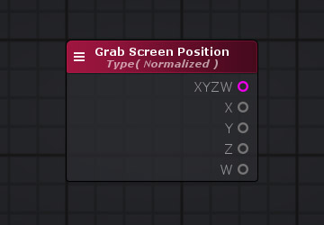
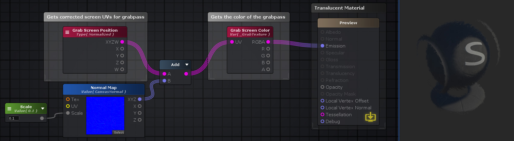
Grab Screen Position 节点输出当前像素的屏幕空间坐标。这个输出的坐标可以直接赋给后面的Grab Screen Color节点上使用。根据选择的类型参数，位置值可以是屏幕坐标，其X轴上的坐标取值范围为[0, Screen Width - 1]，Y轴为[0, Screen Height - 1]，或者是在[0,1]范围的规格化值。本节点对应的函数代码如下：
//
Typed Normalized，传递进来的参数是像素的屏幕坐标
inline float4 ASE_ComputeGrabScreenPos( float4 pos )
{
#if UNITY_UV_STARTS_AT_TOP
float scale = -1.0;
#else
float scale = 1.0;
#endif
float4 o = pos;
o.y = pos.w * 0.5f;
o.y = ( pos.y - o.y ) * _ProjectionParams.x * scale + o.y;
return o;
}
节点参数描述如下表所示：
|
节点参数 |
描述 |
默认值 |
|
Normalize |
是否自动执行透视除法 |
False |
输出端口参数描述如下表
|
输出端口 |
描述 |
类型 |
|
XYZW |
返回抓取屏幕位置坐标值 |
Float4 |
|
X |
返回抓取屏幕位置坐标值X分量 |
Float |
|
Y |
返回抓取屏幕位置坐标值Y分量 |
Float |
|
Z |
返回抓取屏幕位置坐标值Z分量 |
Float |
|
W |
返回抓取屏幕位置坐标值W分量 |
Float |
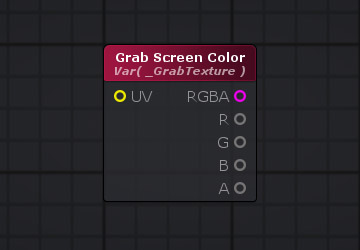
本节点允许使用Grab Pass。Grab Pass将会抓取屏幕的内容生成一张纹理。然后通过指定节点的端口UV坐标，对该纹理进行采样。例如前面的Grab Screen Position节点获取到当前片元对应的屏幕坐标，可以传给本节点的UV输入端口。
当 UV 输入端口未连接时，内部生成的 UV 与直接连接到 Grab Screen Position节点类似。
也可以通过激活节点的【Custom Grab Pass】选项，并在【Name】项中指定一个新名称来使用自定义纹理名称。请注意，当指定自定义纹理名称时，Grab Pass 行为会发生变化，因为当前屏幕内容对于使用给定纹理名称的第一个对象每帧只会被抓取一次。如果没有设置自定义纹理名称，则将为使用它的每个对象获取当前屏幕内容。
使用本节点的一些注意点：
内置管线
Grab Pass仅适用于正向渲染路径。如果在仅延迟着色器上使用，抓取纹理将返回不正确的结果。
URP 3D
要正确该节点，用户必须：
1 转到Render Pipeline Asset的Inspector面板，激活【Opaque Texture】选项。
2 确保关闭此节点上的【2D Renderer】选项。
URP 2D
要正确该节点，用户必须：
1 将2D Asset Renderer上的Foremost Sorting Layer设置最后一层，此层将会被该节点捕获。
2 将精灵本身的Sort Layer（这一层将使用带有本节点的的着色器）设置为高于上一步中指定的排序层。
3 确保此节点上的【2D Renderer 】 选项已打开。
在URP管线中，如果不显式地指定输入端口UV的值，ASE将会使用GrabScreenPos节点对应的代码生成UV坐标，然后使用shadergraph内置的宏获取到grab pass抓到的纹理，代码如下：
half4 frag ( VertexOutput IN ) : SV_Target
{
UNITY_SETUP_INSTANCE_ID( IN );
UNITY_SETUP_STEREO_EYE_INDEX_POST_VERTEX( IN );
#if defined(ASE_NEEDS_FRAG_WORLD_POSITION)
float3 WorldPosition = IN.worldPos;
#endif
float4 ShadowCoords = float4( 0, 0, 0, 0 );
#if defined(ASE_NEEDS_FRAG_SHADOWCOORDS)
#if defined(REQUIRES_VERTEX_SHADOW_COORD_INTERPOLATOR)
ShadowCoords = IN.shadowCoord;
#elif defined(MAIN_LIGHT_CALCULATE_SHADOWS)
ShadowCoords = TransformWorldToShadowCoord( WorldPosition );
#endif
#endif
float4 screenPos = IN.ase_texcoord3;
float4
ase_grabScreenPos = ASE_ComputeGrabScreenPos( screenPos );// 这个函数就是GrabScreenPos节点对应的代码，参见上一节的源代码
float4 ase_grabScreenPosNorm = ase_grabScreenPos / ase_grabScreenPos.w;
float4
fetchOpaqueVal9 = float4( SHADERGRAPH_SAMPLE_SCENE_COLOR( ase_grabScreenPosNorm ), 1.0 );// 这个就是访问grab pass获取到的截屏纹理
float3 BakedAlbedo = 0;
float3 BakedEmission = 0;
float3 Color = fetchOpaqueVal9.rgb;
float Alpha = 1;
float AlphaClipThreshold = 0.5;
float AlphaClipThresholdShadow = 0.5;
#ifdef _ALPHATEST_ON
clip( Alpha - AlphaClipThreshold );
#endif
#ifdef LOD_FADE_CROSSFADE
LODDitheringTransition( IN.clipPos.xyz, unity_LODFade.x );
#endif
#ifdef ASE_FOG
Color = MixFog( Color, IN.fogFactor );
#endif
return half4( Color, Alpha );
}
1.8 Ortho Params
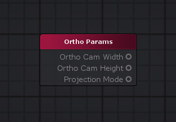
本节点输出当前摄像机的正交模式下的参数
输出端口参数描述如下表
|
输出端口 |
描述 |
类型 |
|
Ortho Cam Width |
正交摄像机的镜头宽度 |
Float |
|
Ortho Cam Height |
正交摄像机的镜头高度 |
Float |
|
Projection Mode |
摄像机的当前投影模式： 0 透视投影 1 正交投影 |
Float |
这个节点的本质就是Unity的内置shader变量 unity_OrthoParams上表中的三个输出端口值分别对应于本变量的x、y、w三个分量。
1.9 Projection Matrices
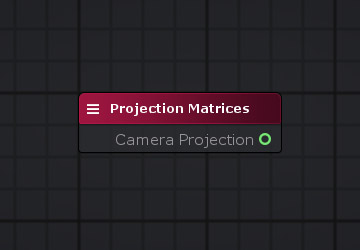
这个节点的本质就是Unity的内置shader变量 unity_CameraProjection（当节点的Type选择Camera Projection时），或者是unity_CameraInvProjection（当节点的Type选择Inverse Camera Projection时）。即当前摄像机的投影矩阵或者是投影矩阵的逆矩阵。
1.10 Projection Params
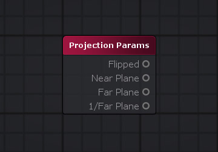
这个节点的本质就是Unity的内置shader变量 _ProjectionParams，它的四个分量xyzw分别对应于：
输出端口参数描述如下表
|
输出端口 |
描述 |
类型 |
|
Flipped |
-1时表示使用的是一个翻转的投影矩阵（flipped projection
matrix）。1为表示使用的是一般的投影矩阵 |
Float |
|
Near Plane |
近截平面的距离值 |
Float |
|
Far Plane |
远截平面的距离值 |
Float |
|
1/Far Plane |
远截平面的距离值的倒数 |
Float |